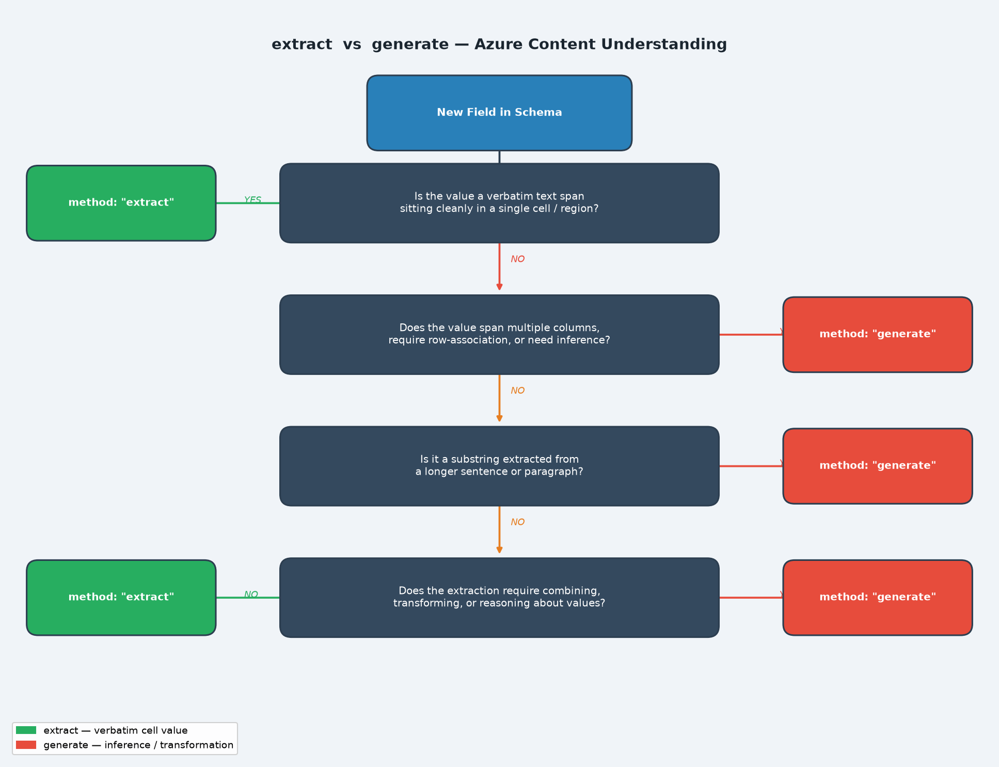

Series: Azure Content Understanding — Field Schema Design
- Part 1 (this article):
extractvsgenerate— choosing the right method - Part 2: Writing Deterministic Field Descriptions
- Part 3: The Boundary Problem — Too Much or Too Little
The Problem
A team was building an automated document processing pipeline using Azure AI Content Understanding. They had designed a field schema to extract structured data from a multi-column table inside a formatted document — registration numbers, dates, instrument types, amounts, and remarks.
Everything looked fine on the first test. But on the second run, certain fields came back empty. The third run, they were populated again. No code had changed. No document had changed. The extraction was behaving non-deterministically.
The culprit wasn't the model. It wasn't a timeout. It was a single word in the schema: "method": "extract" on a field that needed "method": "generate".
Understanding the Two Methods
Azure AI Content Understanding field schemas support two extraction methods:
| Method | What it does | Best for |
|---|---|---|
extract |
Locates and returns the verbatim text found at a specific region of the document | Values that live cleanly in a single cell or span — dates, names, codes, amounts |
generate |
Asks the model to reason, infer, and transform before returning a value | Values that require association across rows, substring extraction from sentences, or combining multiple text spans |
The mental model is simple:
extract= "find it and return it as-is"generate= "think about it, then return what it means"
Why extract Fails on Complex Fields
Consider a document table where an instrument row is followed by a REMARKS row that visually spans multiple columns:
┌────────────┬────────────┬─────────────────┬──────────┬─────────────────┐
│ REG. NUM. │ DATE │ INSTRUMENT TYPE │ AMOUNT │ PARTIES TO │
├────────────┼────────────┼─────────────────┼──────────┼─────────────────┤
│ AT590237 │ 2006/08/28 │ POSTPONEMENT │ $557,997 │ CITY OF ACTON │
├────────────┴────────────┴─────────────────┴──────────┤ │
│ REMARKS: RO993321 ADDED 2006/08/28 DELETED BY... │ │
└──────────────────────────────────────────────────────┴─────────────────┘The REMARKS row does not live in a single column. It spans across the REG. NUM., DATE, INSTRUMENT TYPE, and AMOUNT columns. When the field is defined as "method": "extract", the model looks for a discrete cell value at a fixed location. When the spanning row lands ambiguously — which it does depending on how the document is parsed — the extraction either succeeds or silently returns empty.
Switching to "method": "generate" tells the model: "reason about the document structure, find the row that starts with REMARKS and belongs to the instrument above it, and return that content." This produces consistent results because reasoning is explicit rather than positional.
The Decision Tree

Use the following questions to choose the right method for any field:
- Is the value verbatim text sitting cleanly in a single column? →
extract - Does it span multiple columns or require knowing which row it belongs to? →
generate - Is it a substring you need to pull out of a longer sentence? →
generate - Does it require combining, transforming, or counting values? →
generate
Before and After: The REMARKS Field
Before — inconsistent
"Remarks": {
"type": "string",
"method": "extract",
"description": "Remarks associated to the specific instrument type. This begins with REMARKS and will be an additional row in the document's table."
}Result: Captured on some runs, empty on others. No error, no warning.
After — consistent
"Remarks": {
"type": "string",
"method": "generate",
"description": "The remark for this instrument. A remark is the line that begins with the word 'REMARKS:' positioned directly beneath this instrument's row (same REG. NUM.). Return the complete text of that one line, reading left to right to the end of the line, joining words that are separated by column gaps into a single string. Include any registration numbers that appear in the remark text. Return an empty string if this instrument has no REMARKS line.",
"estimateSourceAndConfidence": true
}Result: Consistent capture on every run, including remarks that contain embedded registration numbers.
Another Common Case: Substring Extraction
Imagine a field in an endorsement document that contains the sentence:
"Attached to and forming a part of Policy No. AB-2024-009812 issued by XYZ Insurance."
You only want the policy number AB-2024-009812.
With "method": "extract", the model returns the entire sentence because that is the text span it can locate. It has no mechanism to isolate a substring.
With "method": "generate" and a description like "The policy number referenced after 'Policy No.' in the attachment clause. Return only the alphanumeric policy number, nothing else." — the model extracts exactly AB-2024-009812.
extract cannot locate a value, it returns an empty string — not an error. This makes non-deterministic behaviour especially hard to diagnose: runs succeed, runs return empty, and there is no signal in the response to indicate anything went wrong.
Key Takeaways
extractis fast and precise when the value lives in a single, clearly bounded cell or region.extractproduces silent failures — empty strings, not errors — when the value requires any reasoning about document structure.- Non-deterministic extraction (works sometimes, fails other times) is almost always a symptom of using
extractwheregenerateis needed. - Switching the method costs nothing in schema complexity and eliminates the entire class of on/off failures.
- Always add
"estimateSourceAndConfidence": truetogeneratefields — it gives you confidence scores to help validate extraction quality during testing.
generate for any field whose value isn't a clean, isolated cell value. The performance cost is negligible, and the reliability gain is significant.